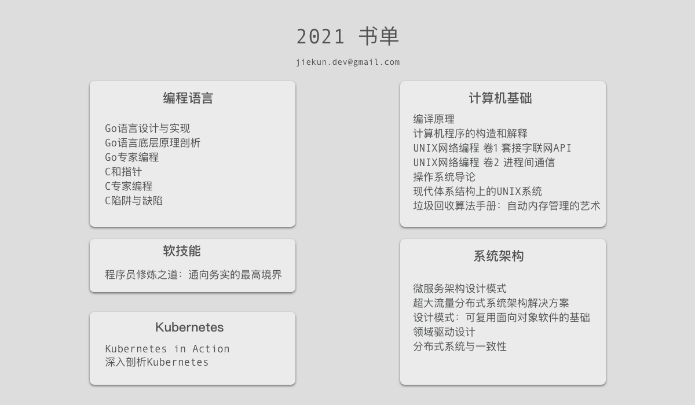
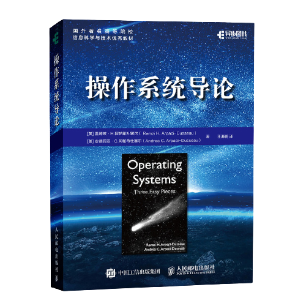
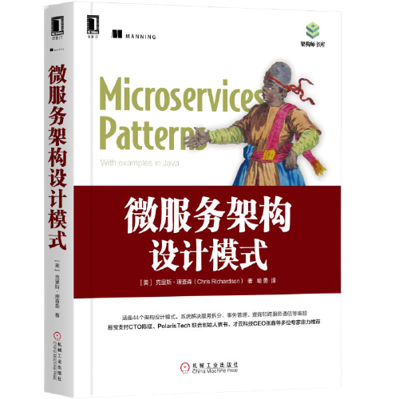
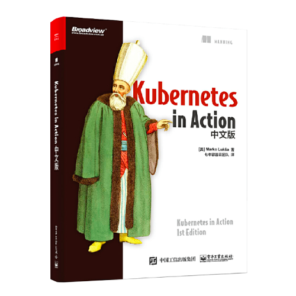

2021 年度总结：期望与选择
Goodbye 2021
好的，其实对自己的 2021 年并不太满意，原因有很多，包括遇到了各种各样的人和事，以及在经历工作前几年的付出和成长，随之而来的更高的期望值。然而事与愿违，过去这一年很多事情都不如想象中的顺利。
又赶上一年一度的总结，当你想跟别人讲 2021 年的故事的时候，除了人人都能看到的以外，总要有一些不同的思考吧。所以，今年的想法是从头到尾整理好这些不满意的点，看看下一年能怎样做得更漂亮。
期望
时间回到 2020 年 10 月，当时还在原来的团队，临近年末的时候争取到了一个很大的项目改动，机遇和挑战总是并存的，对 Developer 来说，谁不想在大的挑战里面交一份满意的答卷呢（躺平党：nsdd）？幸运的是，改动没有出很大的问题，后来还是顺利上线了，自己也收获到了入职来的第一个好绩效。
因为公司的绩效计算是每年的 Q4 至次年 Q3 作为一个结算周期，“当你在 Q4 拿到了一个 A，你会憧憬着剩下的 3 个季度，3 次机会，再争取一次 A”，这句话我至少已经跟不同的人重复过 10 多次。为什么需要第二个 A 呢？因为原来的绩效制度不像现在，有这么多细分的等级，仅凭一个 A 在年终时并不足以让你拿到更高一档的全年绩效，依然会是一个冷冰冰的 B，所以其实拿一次和拿两次好绩效，在当时的我看来，差异是很大的。
然而问题就正好出在这里，2020 年 Q4 结束之后，因为业务技术架构的变更，为了将老的业务迁移到新的系统，部门内有大量的梳理和配置工作要做。梳理是由于对接第三方的业务场景，当系统里面存在着 100+ 不同的第三方且无法以开放平台的方式让外部自助接入，那其实为不同的客户做不同的特殊逻辑也是很正常的。在新平台里，大多数的特殊逻辑都以配置化的方式实现，迁移后只需要进行配置就能支持，听起来很方便不是么？从产品和运营的角度来看，或许是对的。
我记得在发起调动申请的时候，部门内 HR 同事有跟我说过这样一句话：“以我这么多年作为 Recruiter 的经验看，其实业务的 QPS、并发这些，对 Developer 的成长还是很重要的”。这句话本身确实没有错，但是从我的角度来看，接到的任务将我推离了业务系统，梳理者和配置者的角色本身与“研发”冲突，这是一个已经开发好的系统，交付给使用者使用，而我就是那个使用者。另外，其实配置并不是一个容易、简短的过程，团队内不止一个人参与，配置了半年也只完成了 50% 左右的量。
说到这里，我又想起来当初上级跟我说的另一句话：“之所以将你放到迁移专项中，是因为你之前一直也说对 Go 很感兴趣，原来（老系统）是 Python 写的，这次去研究新系统正好可以锻炼一下”。我很难说清这半年里我对 Go 有了哪些新的理解，但是至少是把自己给锻炼走了，因为我想做一个 Developer，而不是业务运营。
那么，到这里关于“期望”的故事就差不多讲完了，因为有一个好的开局，所以作为 Developer，我对自己的 2021 年其实有很高的期望。当个人成长与团队业务发展有所冲突的时候，其实最受伤的还是个人，因为团队的业务目标是既定的，不可能因为你的技术方向和规划有所让步。如果真的要寻求改变，那需要自己做出选择。
选择
调动或者离职一定不是个很简单就能决定的事情，因为它未必能解决你的问题，而且会有很大的风险。在新的团队氛围相对不可预知，并且重新建立信任也需要花很长的时间。
那到底要不要走呢？或许 Leader 从我入职到离开都没能发现我在争取的是什么，工作内容能以什么方式帮到 Member 成长，这是最核心的竞争力。或许我会因为薪资、工作时间、Title 的事情去做一些争取，但是这一定不是转岗的理由。
除了解决问题以外，做出选择还要考虑到会失去什么：
- 如果提出转岗，基本意味着剩下的时间内不要再考虑什么好的绩效。
- 或许会错过一年一次的晋升机会。
虽然已经工作了很多年，可能也已经没了刚毕业时那么强烈的技术热情，但是抓住每个成长的机会还是太重要了，回头想想，难道当初拿到第一个 A 的时候不正因为这种想法么？
新团队
2021 年 8 月份来到了现在的新团队，如果说要用什么样的词语来描述新的工作，我想应该是“踏实”，久违的作为一个开发者的感觉，在小小博客中无法表述。还是之前的话，我说，我希望 Member 在帮到团队的同时，团队也能在成长上帮到 Member。在这里，我更愿意把顺序调整一下：团队能在成长上帮到员工，那我会更乐意在常规业务以外的方方面面帮到团队。
学习
过去这年书单多了 21 本书（当然没全部读完），整理的时候很惊讶发现没有任何数据库或存储相关的书。在往年，KVS 和 Cache 是自己很关注的方向，个人应该要有自己的招牌，也就是擅长的领域。

在下半年中，多花了很多的时间关注微服务架构和 Kubernetes，前者是因为业务需要，而后者则是当前技术栈下的选择，如果想参与开源项目，我会说一定要选择一个与个人工作生态能结合的开源社区作为目标。
书单中有 3 本书是打算特别推荐的，按照阅读的顺序罗列。

第一本是《操作系统导论》，王海鹏老师翻译得很流畅，当然如果有能力的话读原版是最好的，可惜国内没有引入，只能到国外买。虚拟化和并发两节写得挺不错，有一种“如果我是操作系统，我怎样处理虚拟化和并发”的体验。比起其他 OS 的书，如果只能推荐一本的话，那毫无疑问会是这本。

《微服务架构设计模式》讲的是微服务的方方面面，个人认为比起现在火爆的领域驱动设计，理解微服务的几个关键点更加重要：
- 单体服务缺点，微服务优点
- 拆分策略
- 服务间通信
- Sega 事务
亲眼见过有的单体项目被拆分成几个臃肿无比的新单体服务，里面很多事情都是违背了微服务的理念的。所以个人觉得那并非微服务，只是为了一己的 KPI 找事情做而已，后果就是新来的人都要给这堆屎山代码填坑，再后来搞 DDD 也不能解决任何问题。
回到这本书上，其实书里面的概念就是微服务最基础的东西，但是如果你没接触过微服务，或者只是跟着别人做过一点所谓的“微服务”，那可以带着问题来读，比如：“我做的小型单体服务是微服务吗？”，这些基础知识或许会改变你对微服务的印象。

最后一本是《Kubernetes in Action》。读 Kubernetes 的书是由于一个很偶然的机会，要去了解一些相关的知识。推荐这本书是因为它对新人很友好，程序员最好的学习方式就是敲代码，也是 in Action 系列书籍受欢迎的原因之一。只要本地或者 GKE 上搭建有 Kubernetes 集群，就可以很轻松实践书里的所有内容，阅读时长大概 3 周到 1 个月，就算只是抄一遍书里的代码，也可以对 Kubernetes 的在企业基建中的角色有深入的体会。
OKR
2021 年的最后来盘点一下去年工作之外的 OKR 完成情况。
- O1：团队技术影响力
- KR1：5 次技术分享（6/5）
- KR2：5 篇技术博客（3/5）
- O2：开源社区贡献
- KR1：翻译《技术写作课程》（4/17）
- KR2：为 Kubernetes 提交 1 次 PR（1/1）
- KR3：为 redis-py 提交 1 次 PR（2/1）
- O3：新的好习惯
- KR1：早睡早起（诶嘿嘿嘿嘿嘿嘿）
- KR2：做饭
Hello 2022
2022 年时间上好像会比往年充裕一些，所以新的 OKR 本来可以更加激进，不过生活里面也有很多想做的事情，最后平衡下来大概只能挑一些合适的来发展。
- O1：团队技术影响力
- KR1：2 篇 Shopee 技术博客
- KR2：1 次 Shopee Academy 分享
- O2：开源社区贡献
- KR1：成为 Kubernetes Member
- KR2：成为 Kubernetes Scheduling SIG Reviewer
- KR3：翻译《技术写作课程》（orz 填坑）
- O3：生活
- KR1：去两个新的城市旅游
- KR2：一台单反 & 多拍照
- KR3：一辆新车（?）